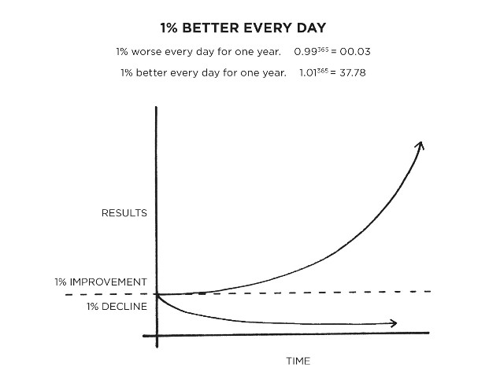
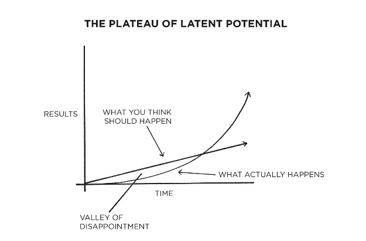

It is so easy to overestimate the importance of one defining moment and underestimate the value of making small improvements on a daily basis.
Meanwhile, improving by 1 per cent isn’t particularly notable—sometimes it isn’t even noticeable—but it can be far more meaningful, especially in the long run. The difference a tiny improvement can make over time is astounding. Here’s how the math works out: if you can get 1 per cent better each day for one year, you’ll end up thirty-seven times better by the time you’re done. Conversely, if you get 1 per cent worse each day for one year, you’ll decline nearly down to zero.
The same way that money multiplies through compound interest, the effects of your habits multiply as you repeat them. They seem to make little difference on any given day and yet the impact they deliver over the months and years can be enormous.
Success is the product of daily habits—not once-in-a-lifetime transformations. That said, it doesn’t matter how successful or unsuccessful you are right now. What matters is whether your habits are putting you on the path toward success. You should be far more concerned with your current trajectory than with your current results. If you’re a millionaire but you spend more than you earn each month, then you’re on a bad trajectory. If your spending habits don’t change, it’s not going to end well. Conversely, if you’re broke, but you save a little bit every month, then you’re on the path toward financial freedom—even if you’re moving slower than you’d like.
For Weekly Wisdom in your Inbox
If you find yourself struggling to build a good habit or break a bad one, it is not because you have lost your ability to improve. It is often because you have not yet crossed the Plateau of Latent Potential.
We often expect progress to be linear. At the very least, we hope it will come quickly. In reality, the results of our efforts are often delayed. It is not until months or years later that we realise the true value of the previous work we have done. This can result in a “valley of disappointment” where people feel discouraged after putting in weeks or months of hard work without experiencing any results. However, this work was not wasted, it was simply being stored. Its is not until much later that the full value of previous efforts is revealed. When you finally break through the Plateau of Latent Potential, people will call it an overnight success. The outside world only sees the most dramatic event rather than all that preceded it.
Small changes often appear to make no difference until you cross a critical threshold. The most powerful outcomes of any compounding process are delayed. You need to be patient.
Source: Atomic Habits by James Clear